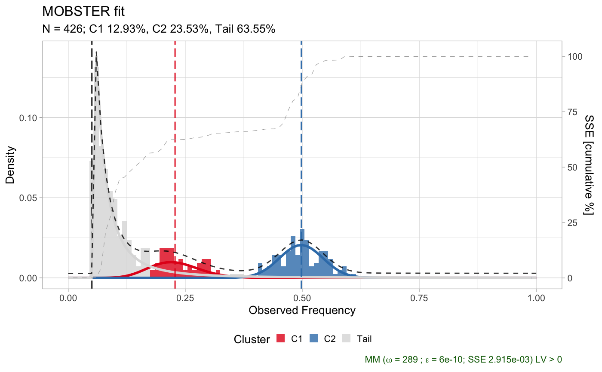
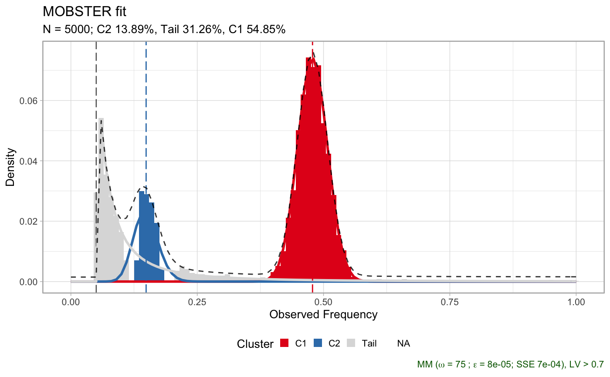
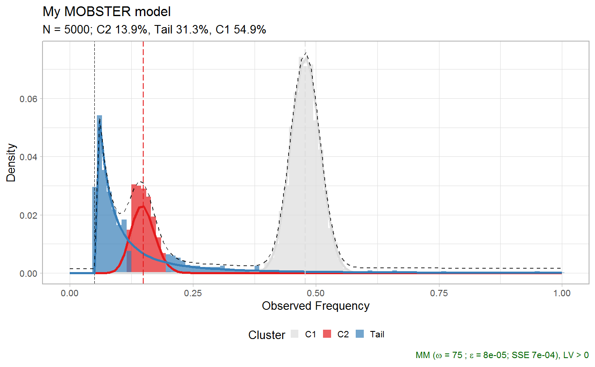
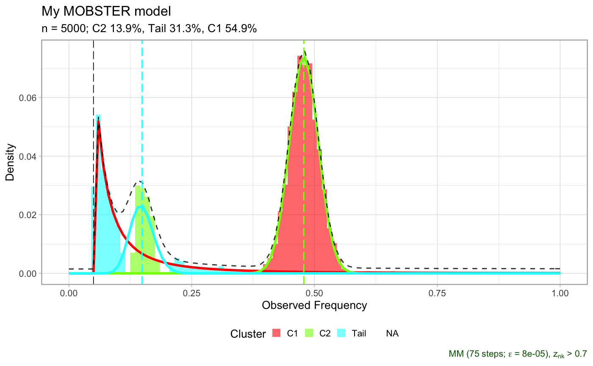
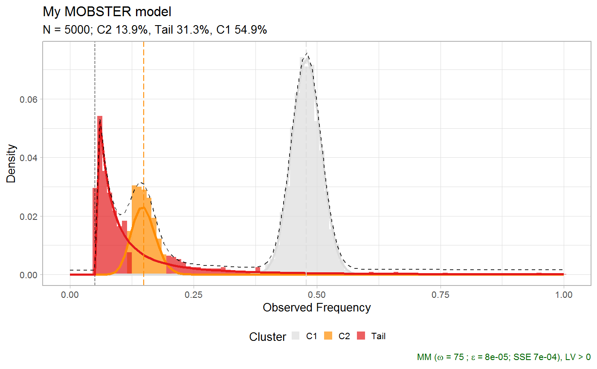

Plot a MOBSTER fit.
plot.dbpmm( x, cutoff_assignment = 0, beta_colors = RColorBrewer::brewer.pal(n = 9, "Set1"), tail_color = "gainsboro", na_color = "gray", annotation_extras = NULL, secondary_axis = NULL, ... )
| x | An object of class |
|---|---|
| cutoff_assignment | Parameters passed to run function |
| beta_colors | A vector of colors that are used to colour the Beta clusters.
Colors are used by order for |
| tail_color | The colour of the tail cluster, if any. |
| annotation_extras | A dataframe that contains a label column, and a VAF value. The labels will be annotated to the corresponding clusters of the VAF values. |
| secondary_axis |
|
| ... |
A ggplot object for the plot.
#> Warning: You did not pass enough input colours, adding a gray colour #> Available: C1, C2, Tail #> Missing: NA